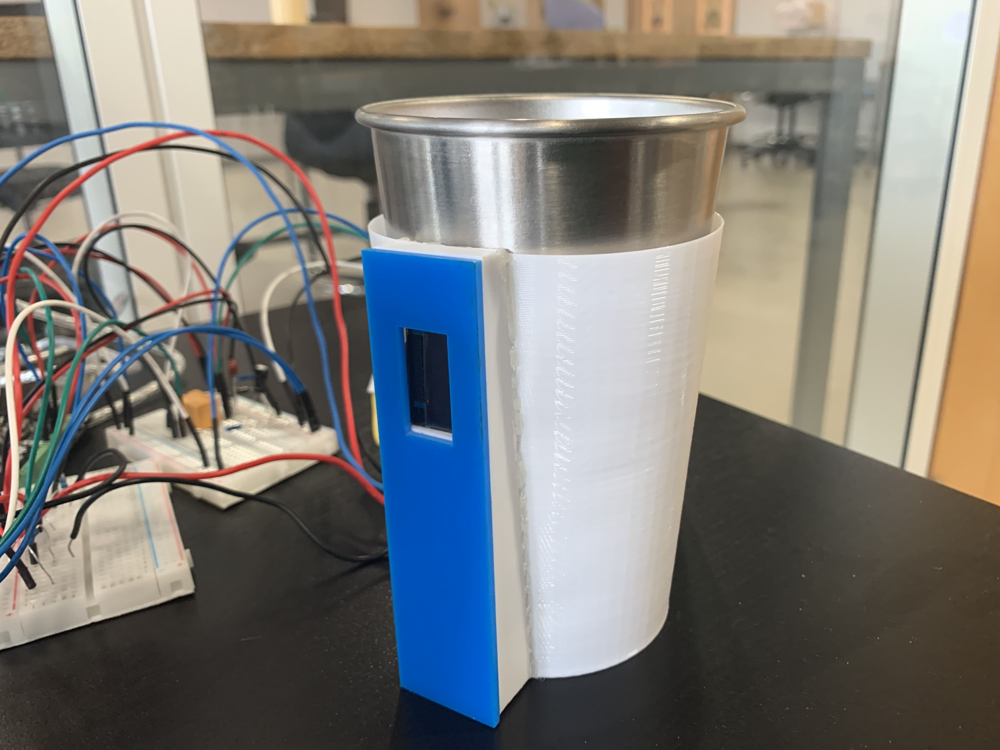
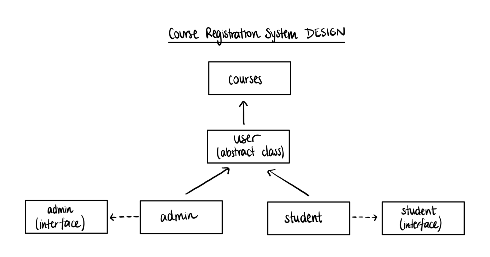

"Distorted" is a project created to visualize racial stereotypes in an interactive way. It was a joint Arduino-Processing code meant to expose a user to what it feels like to be profiled based on their race or ethnicity."
iCups was an arduino project developed to help users feel connected with their families abroad. This magical coffee mug helps two users at different distances feel each other when drinking from it.
The Game of Life is a java project that simulates cell regeneration. The game can be configured in a square or hexagonal grid, to allow the user to view how cells die and come to life.
Albert 2.0 is an all-integrated Course Registration System designed in Java using Object-Oriented Programming, to help admins and students better navigate their registration experience.
